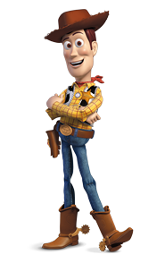

Woody
Es el emblemático personaje de "Toy Story", es un valiente y leal vaquero de juguete que se ha convertido en un ícono de la amistad y la aventura en el mundo del cine animado. Con su corazón de oro y su sombrero de vaquero, Woody es el líder natural de los juguetes de Andy y un amigo incansable que siempre está dispuesto a hacer lo correcto.
Peliculas